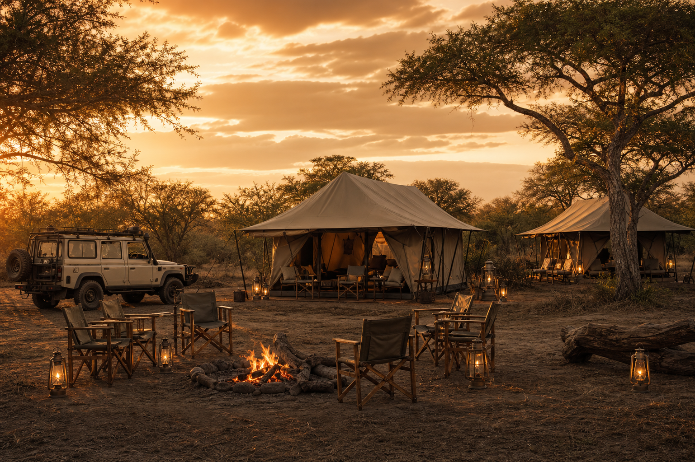
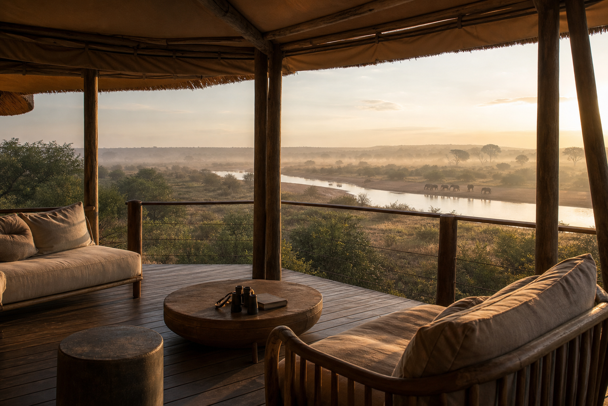
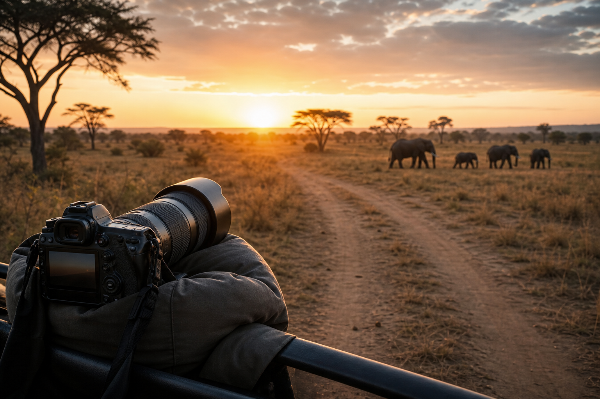
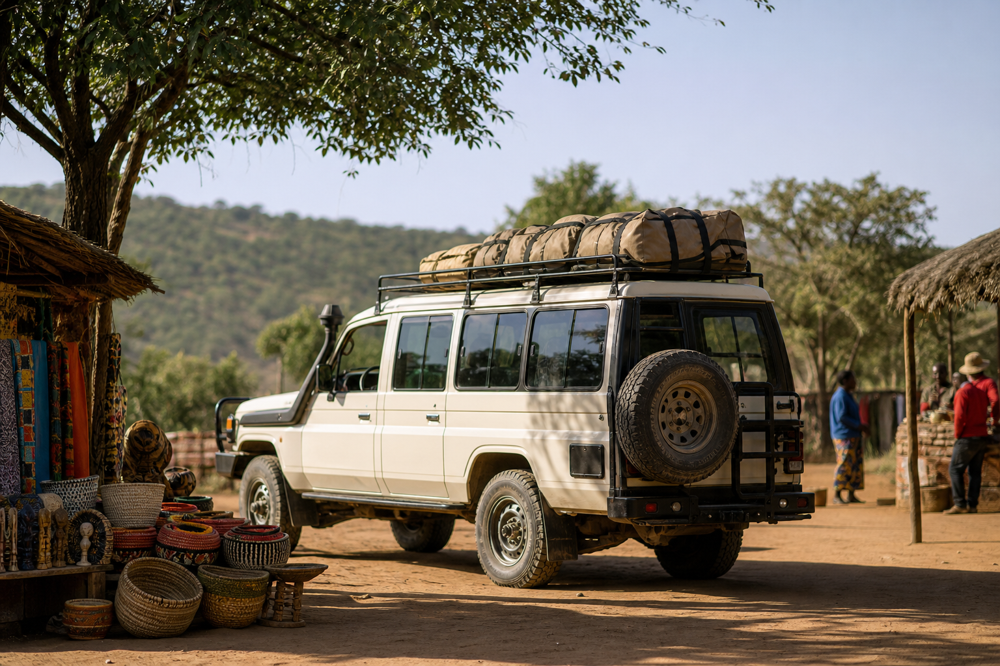
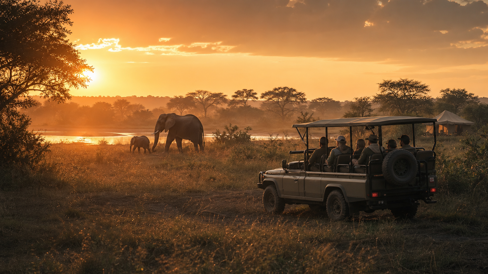

Mobile safaris
Sleep close to the wild, with the route kept flexible.
Mobile safaris suit guests who want a more immersive pace, private camp atmosphere, and strong access to remote landscapes without giving up thoughtful comfort.
Choose one focus or combine several into a single route: mobile camping, lodges, photography, culture, hosted journeys, and transfers.
Experience taxonomy
The structure is flexible by design. A guest can land in Lusaka or Livingstone, transfer into a lodge, continue into a mobile camp, add a cultural day, and finish with a hosted extension.

Mobile safaris
Mobile safaris suit guests who want a more immersive pace, private camp atmosphere, and strong access to remote landscapes without giving up thoughtful comfort.

Lodge safaris
Lodge routes are matched to season, comfort level, wildlife priorities, and travel flow, with transfers and arrival timing planned carefully.

Photographic safaris
Photography-led trips consider vehicle setup, sunrise and sunset timing, days with enough patience, and destinations suited to the guest's priorities.

Cultural tours
Cultural days can be woven into safari routes with care, respect, and context so the journey feels fuller without turning people or places into props.

Hosted trips
Hosted journeys are useful for private groups, photographers, families, corporate travel, and cross-border routes where on-trip support matters.
Transfers and transport
Airport transfers, inter-city transfers, cross-border transfers, private vehicles, and corporate travel support can be planned as standalone services or part of a wider trip.
What is included
Inclusions vary by itinerary, but the planning approach should make scope, route, transport, accommodation, and support easy to understand.
Destination sequencing, travel days, transfer windows, and realistic pacing.
Guiding coordination, activity planning, lodge or camp matching, and hosted options.
Vehicle needs, airport movement, cross-border notes, and communication before arrival.
Build the route
Moor's Wild Safaris will help turn those pieces into a clear safari proposal.